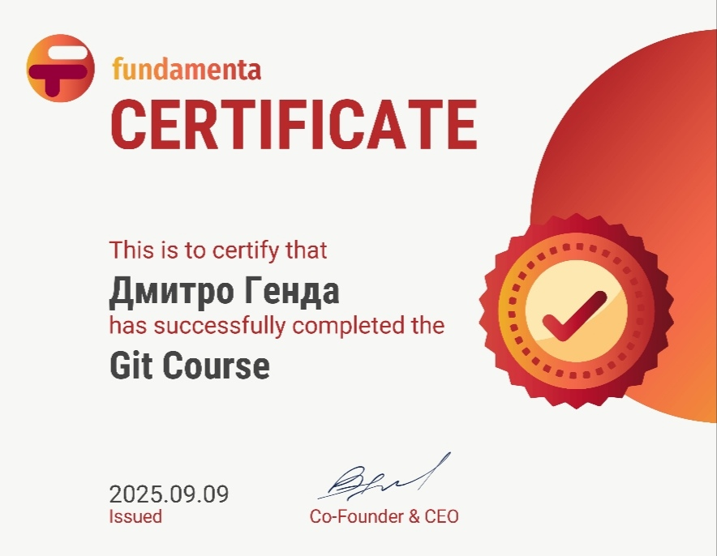

Коротка інформація про Git
Git — це розподілена система контролю версій, створена Лінусом Торвальдсом у 2005 році. Вона дозволяє відстежувати зміни, працювати в команді та ефективно керувати кодом.
Основні можливості та переваги Git
- Повністю розподілений підхід
- Швидкість виконання команд
- Гнучка робота з гілками
- Злиття, ребейзи, теги
- Інтеграція з GitHub, GitLab, Bitbucket
10 базових команд Git
git init # Створює репозиторій
git clone [url] # Клонує віддалений
git status # Стан директорії
git add . # Додає зміни
git commit -m ""# Коміт з коментарем
git log # Історія комітів
git branch # Гілки
git checkout # Перехід між гілками
git merge # Злиття гілок
git push/pull # Відправлення/отримання
Сертифікат курсу Git
GNU/Linux
GNU/Linux — це вільна та відкрита операційна система, яка поєднує ядро Linux, створене Лінусом Торвальдсом у 1991 році, та інструменти проекту GNU, ініційованого Річардом Столлманом.
📜 Історія
- 1983 — стартує проєкт GNU.
- 1991 — Лінус Торвальдс публікує ядро Linux.
- 1993 — з’являється перший дистрибутив Slackware.
- 2004 — випуск Ubuntu, що зробив Linux популярним серед звичайних користувачів.
🧩 Архітектура
Linux складається з кількох ключових компонентів:
- Ядро — керує ресурсами системи, пам’яттю, процесами, пристроями.
- Shell — командна оболонка для взаємодії з системою (bash, zsh).
- Файлова система — все в Linux представлено у вигляді файлів.
- Графічне оточення — GNOME, KDE, XFCE, які забезпечують інтерфейс.
⚙️ Використання Linux
Linux є універсальною ОС, яку можна зустріти в багатьох сферах:
- 💻 Робочі станції — Fedora, Ubuntu, Linux Mint.
- 🖥️ Сервери — Debian, CentOS, Red Hat Enterprise Linux.
- 📱 Мобільні пристрої — Android побудований на базі ядра Linux.
- ☁️ Хмарні сервіси — більшість серверів у хмарі працюють на Linux.
- 🚀 Суперкомп’ютери — понад 95% топових суперкомп’ютерів використовують Linux.
✅ Переваги Linux
- Відкритий код і свобода налаштування.
- Безпека та стійкість до вірусів.
- Стабільність та надійність.
- Широкий вибір дистрибутивів під різні задачі.
- Велика спільнота та документація.
🌍 Висновок
Linux — це не просто операційна система, а ціла екосистема. Вона поєднує свободу, гнучкість і потужність, роблячи Linux вибором як для новачків, так і для професіоналів.
Найпопулярніші дистрибутиви Linux
![Arch Linux]()
Arch Linux
Minimalistic rolling-release дистрибутив для досвідчених користувачів, які хочуть повний контроль над системою.
![RedHat]()
Red Hat
Корпоративний дистрибутив з акцентом на стабільність і підтримку, часто використовується на серверах.

Debian
Один з найстаріших і найстабільніших дистрибутивів, відомий своєю надійністю і великою кількістю пакетів.
Ubuntu
Найпопулярніший дистрибутив для новачків і розробників. Простий у використанні, має велику спільноту.
Fedora
Інноваційний дистрибутив з найсвіжішими технологіями, тісно пов’язаний з Red Hat.
Приклади команд Linux
pwd→ /home/legendaecho "Hello"→ Hellols→ Список файлівcd Documentstouch file.txtmkdir foldercp file.txt folder/file_copy.txtmv file.txt folder/file_moved.txtsudo rm -rf /❌
Програма Bash
#!/bin/bash
username="LeGenda"
password="pass"
entered=0
checkLogin() {
read -p "Enter username: " tusername
read -p "Enter password: " tpassword
if [[ "$tusername" = "$username" && "$tpassword" = "$password" ]]; then
echo "system entered"
entered=1
else
echo "wrong username or password"
fi
}
while [[ "$entered" -ne 1 ]]; do
checkLogin
done